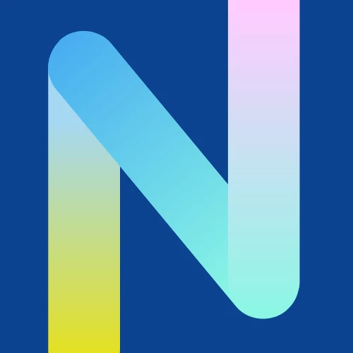
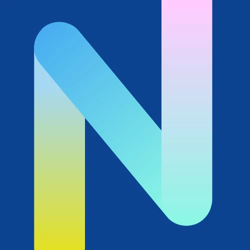

I am a married mother of two living in sunny (and hot!) SW Florida with our tabby cat, Saber T. Tiger. Born and raised in Florida, my pronouns are she/her, and I am of latin descent and speak and fully understand Spanish. I have taught high school math for almost 11 years, to over 1500 learners.

For most of my life, teaching was the dream job. It turns out that I am really good at it, I love the maths, and I enjoy working with and shaping young adults. Though once the sparkle faded away, I realized my choices for advancement were limited. Any real promotion would take me out of the classroom, so I thought if I have to leave the classroom to grow professionally then I would expand my options outside of the public education field. The most logical next step for a teacher (or so I thought) would be to transition into Intructional Design and Learning Development.
However, while building a portfolio website for my transition into Instructional Design and Learning, I realized I'd much rather work on portfolio websites...a passion for web development was born. In my time in education I have created hundreds of presentations, digital materials and documents that require time and effort. I pride myself in producing professional quality products even if it was mostly for in class use. Software Development encompasses many of the aspects of teaching I enjoyed most, creating a product with technology and working out the kinks (bugs) to make it better, and planning out a process of how to improve processes, and delivering a viable product for users (me and the other teachers on my time that use my material).

I most enjoy spending time with my family, going on family trips, and teaching my children about the world. On my free time, I enjoy reading science fiction novels with a preference for dystopias and super natural genres. I also enjoy the guilty pleasure of playing Call of Duty with my husband. I'm an avid movie watcher and love binge watching tv shows on long weekends. My favorites franchises are Marvel and Star Wars. I like recommending good shows to watch too.


 
